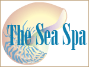
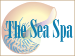

Massages
Sports Massage
Our deepest massage for tense and sore muscles. Not recommended for first-time massage clients.
Swedish Massage
A gentle, relaxing massage. Promotes balance and wellness. Warms muscle tissue and increases circulation.
Hot Stone Massage
Uses polished local river rocks to distribute gentle heat. Good for tight, sore muscles. Balances and invigorates the body muscles. Advance notice required.
Facials
Revitalizing Facial
A light massage with a customized essential oil blend that moisturizes the skin and restores circulation.
Gentlemen’s Facial
A cleansing facial that restores a healthy glow. Includes a neck and shoulder massage.
Milk Mask
A soothing mask that softens and moisturizes the face. Leaves your skin looking younger.
Body Treatments
Salt Glow
Imported sea salts are massaged into the skin, exfoliating and cleansing the pores.
Herbal Wrap
Organic lavender blooms create a detoxifying and calming treatment to relieve aches and pains.
Seaweed Body Wrap
Seaweed is a natural detoxifying agent that also helps improve circulation.
Call The Sea Spa desk for prices and reservations. Any of our services can be personalized according to your needs. Our desk is open from 7:00 a.m. until 9:00 p.m. Call 555-594-9458, extension 39.